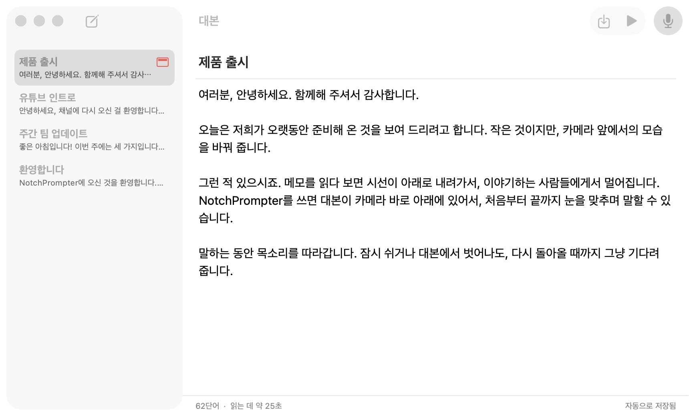
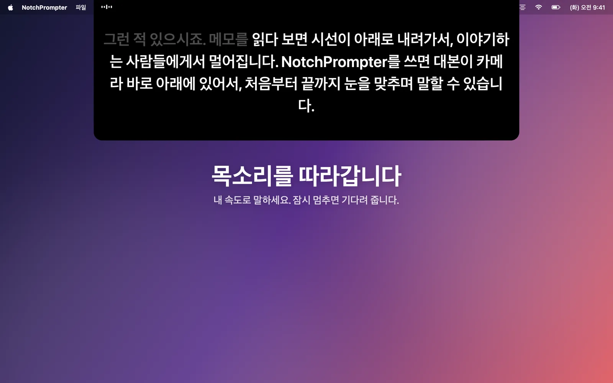
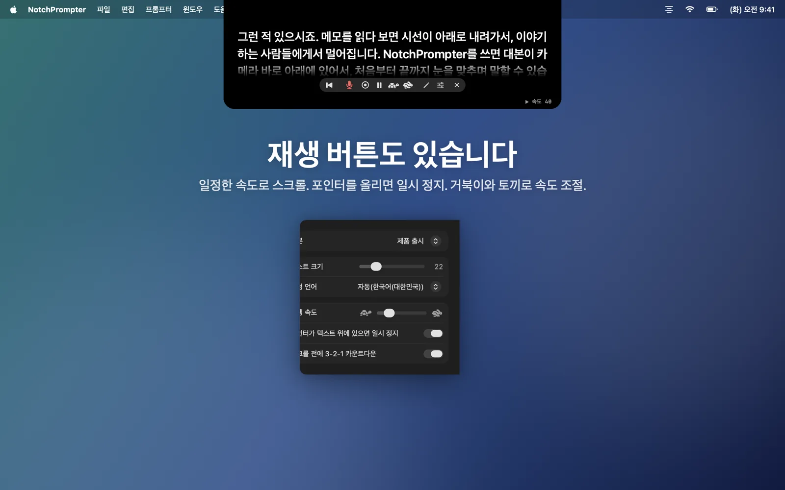
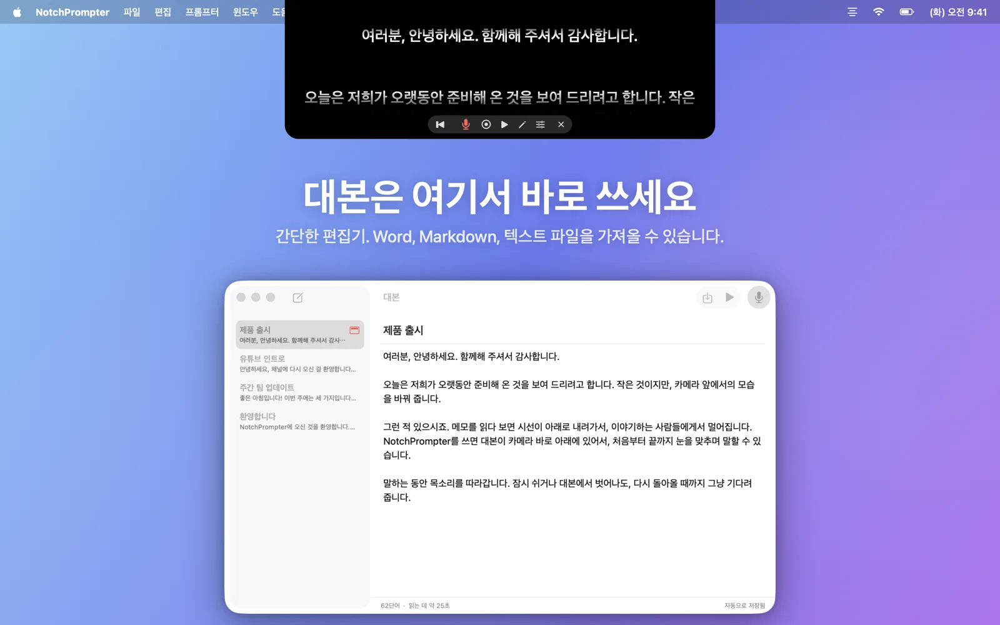
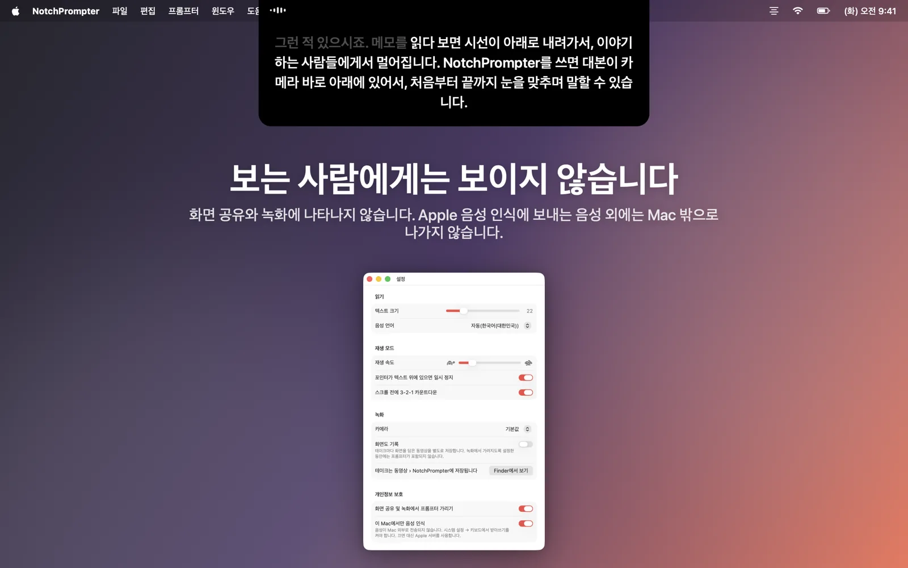

읽으면서도 시선은 그대로
NotchPrompter는 대본을 카메라 바로 아래에 띄우고 목소리를 따라갑니다. 어떤 언어든, 중간을 건너뛰어도, 모든 처리는 Mac에서 이루어집니다.
무료 오픈 소스. macOS 15 Sequoia 이상에서 사용할 수 있습니다. 노치가 있는 MacBook에서 가장 잘 작동하며, 상단에 카메라가 있는 모든 Mac에서 사용할 수 있습니다.
실제로 보기
읽고, 멈추고, 건너뛰세요. 프롬프터가 따라옵니다.
필요한 건 모두. 거슬리는 건 하나도 없이.
카메라 아래의 작은 검은색 패널, 알기 쉬운 버튼 몇 개, 대본을 위한 작은 편집기, 그리고 녹화 버튼.
목소리를 따라갑니다
마이크를 누르고 말하세요. 다음 단어가 항상 카메라 바로 아래에 있습니다. 이미 말한 단어는 흐려집니다.
어떤 언어든 자동으로
NotchPrompter는 대본이 어떤 언어인지 파악하고 그 언어로 듣습니다. 영어, 노르웨이어, 독일어, 스페인어, 일본어 등 수십 개 언어를 지원합니다.
건너뛰어도 따라옵니다
문장을 건너뛰거나, 단어를 바꾸거나, "어" 하고 말해도 괜찮습니다. 지금 읽는 위치를 찾아 함께 넘어갑니다. 멈추면 기다립니다.
재생 버튼도 있습니다
3-2-1 카운트다운 후 부드럽게 스크롤됩니다. 포인터를 올리면 일시 정지되고, 거북이와 토끼 버튼으로 속도를 조절합니다.
내장 편집기
모든 대본을 한곳에서 쓰고 보관하세요. Word, Markdown, RTF, 텍스트 파일을 가져올 수 있습니다. 자동으로 저장됩니다.
나를 녹화하기
녹화를 누르면 읽는 동안 카메라와 마이크로 자신을 촬영합니다. 각 테이크는 동영상 폴더에 동영상으로 저장됩니다.
보는 사람에게는 보이지 않습니다
화면 공유, 스크린샷, 화면 녹화에 나타나지 않습니다. 나만 볼 수 있습니다.
모든 처리는 Mac에서
음성은 클라우드가 아닌 Mac에서 인식됩니다. 계정도, 추적도 없습니다. 대본과 녹화본은 절대 Mac 밖으로 나가지 않습니다.
대본을 클릭 한 번으로
프롬프터의 연필을 클릭하면 편집기가 열립니다. 대본을 고르고 마이크를 누른 다음 말하기 시작하세요.
- 대본을 쓰거나 붙여 넣거나 파일을 가져옵니다.
- 음성으로 읽기를 누릅니다.
- 카메라를 보고 말합니다.

카메라 앞을 위해 만들었습니다
화상 통화, YouTube, 강의, 웨비나, 피칭까지.




자주 묻는 질문
정말 무료인가요?
네. NotchPrompter는 MIT 라이선스의 무료 오픈 소스입니다. 광고도, 구독도, 계정도 없습니다. 소스 코드는 GitHub에 있으며, 이곳에서 버그를 신고하거나 기능을 제안하거나 개발에 참여할 수 있습니다.
노치가 없어도 되나요?
네. 노치가 없는 Mac에서는 프롬프터가 화면 맨 위, 메뉴 막대 바로 아래에 걸립니다. 이곳도 카메라와 가깝습니다.
음성 따라가기는 어떤 언어를 지원하나요?
영어, 노르웨이어, 독일어, 프랑스어, 스페인어, 중국어, 일본어를 포함해 수십 개 언어를 지원합니다. NotchPrompter가 대본의 언어를 파악해 그 언어로 들으므로 따로 설정할 필요가 없습니다. 설정에서 다른 언어를 고를 수도 있습니다.
화면을 공유하면 다른 사람에게 프롬프터가 보이나요?
아니요. 기본적으로 화면 공유, 스크린샷, 화면 녹화에서 숨겨집니다. 보여 주고 싶다면 설정에서 끌 수 있습니다.
클라우드로 전송되는 것이 있나요?
아니요. 음성은 Mac에서 인식되며(시스템 설정에서 받아쓰기가 켜져 있어야 함), NotchPrompter에는 서버가 없습니다. 음성 따라가기는 절대 오디오를 저장하지 않습니다. 녹화를 누를 때만 동영상이 저장되며, 저장 위치는 사용자의 동영상 폴더입니다. 개인정보 처리방침을 읽어 보세요.
키보드 단축키는 무엇인가요?
프롬프터를 클릭한 다음: 스페이스 바 재생/일시 정지, V 음성, C 녹화, R 맨 위로, ↑ ↓ 속도, + − 텍스트 크기, E 편집기, Esc 정지.